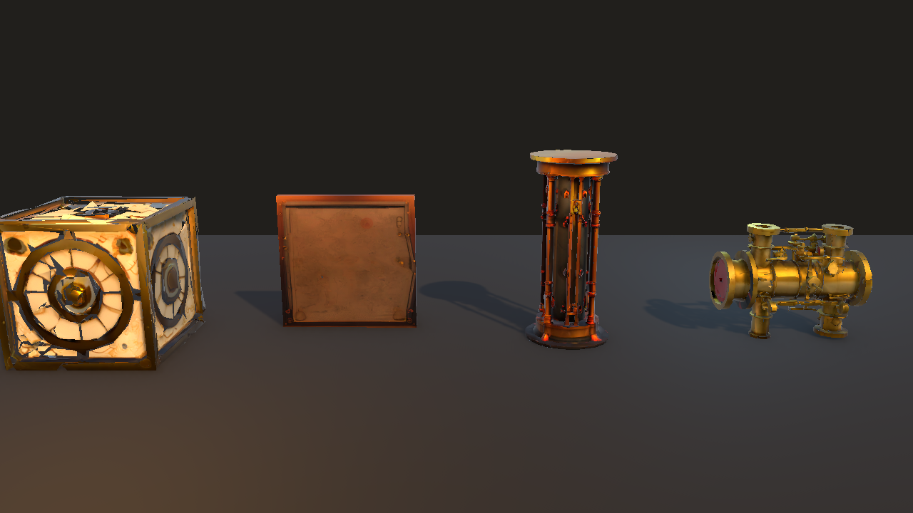
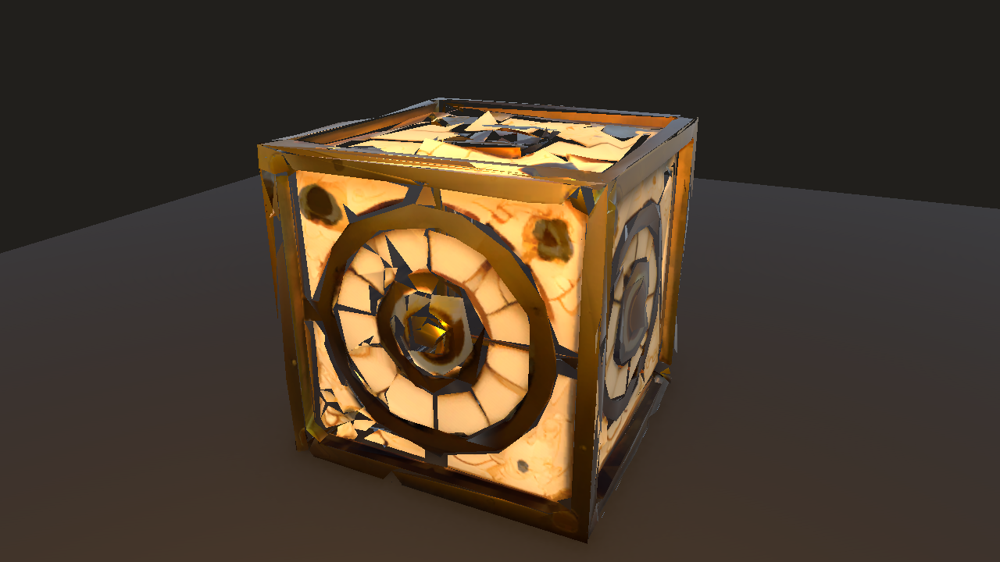
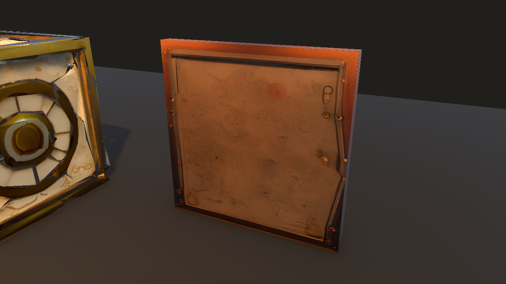
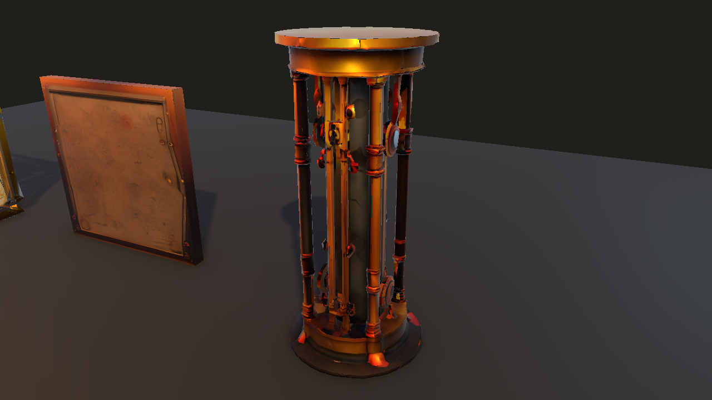
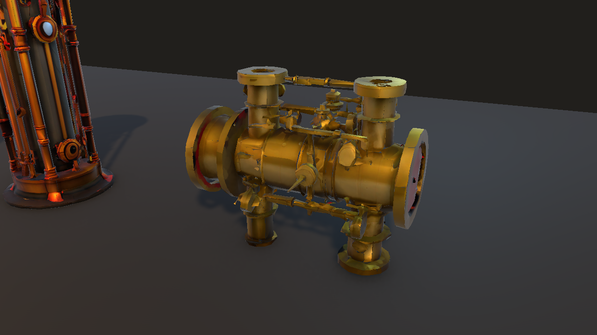

Pipeline Fábrica 3D
TripoSG + Hunyuan PBR
glTF-Validator
4 / 4 PASS (0 erros)
validate_visual (env_*)
4 / 4 PASS (exit 0)
Fab3dImporter Unity
4 / 4 Prefabs URP Lit
Caldeiral.unity
Intocado (Fase 4.1 travada)
Showcase Conjunto — Kit Completo Lado a Lado (Iluminação Caldeiral URP)
4 ASSETS REAIS NO UNITY
O que se vê: Da esquerda para a direita: Tile de Piso (
env_tile), Painel de Parede (env_tile), Pilar Estrutural (env_structure) e Duto de Vapor (env_structure), todos sólidos com PBR metálico quente em latão/cobre/ferro escuro.
1. Tile de Piso (caldeiral_env_floor_tile)
env_tile · 2000 tris
Observação: Bloco modular sólido em latão e marfim/creme com anel de engrenagem central; na Fase 4.1 será escalado como laje de piso (ou usado também como textura PBR world-scale nos pisos extensos).
2. Painel de Parede (caldeiral_env_wall_panel)
env_tile · 2000 tris
Observação: Placa de caldeira sólida em cobre/bronze envelhecido com moldura perimetral rebitada (face traseira visível no ângulo 3/4; face frontal traz as engrenagens em relevo).
3. Pilar Estrutural (caldeiral_env_portal_pillar)
env_structure · 8000 tris
Observação: Coluna industrial de núcleo em ferro escuro cercado por hastes de latão, engrenagens laterais e base/capitel circulares limpos — zero buracos, leitura imediata.
4. Duto de Vapor (caldeiral_env_vapor_pipe)
env_structure · 8000 tris
Observação: Tubulação horizontal em latão polido/oxidado com flanges pesados, suportes inferiores, válvulas superiores e tampa vermelha — peça pronta para dutos-guia de Z1→Z5.